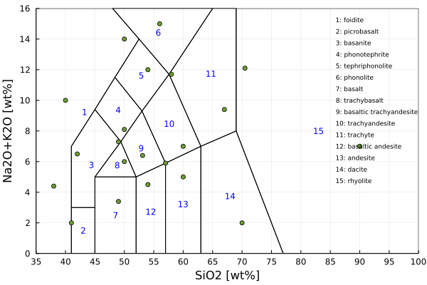

TAS rock classification
Methods
When doing coupled petrological-geodynamic modelling, the evolution of the composition of the magma is more easily understood when a rock type is given. This routine is an implementation of the TAS diagram (Total Alkali (TA) vs Silica (S)) from Le Maitre et al., 2002.
GeoParams.TASclassification.TASclassificationData — TypeTASclassificationData
Struct that holds default parameters for the TAS diagramComputational routine
There is one routine with which you can retrieve the index of the TAS rock-type. The routine receives as an input a compositional vector [SiO2,Na2O+K2O] in wt% and sends back an index [1-15].
GeoParams.TASclassification.computeTASclassification — FunctionclassIndex computeTASclassification(chemComp::AbstractArray{_T,N}, ClassTASdata::TASclassificationData)
This compute the classification of the igneous rock using TAS diagram (Total Alkali (TA) vs Silica (S)).
Input:
chemComp: vector rock composition in oxide wt%
Output:
classIndex: an integer [0-14] corresponding to a TAS field (TASclassificationData.litho[classIndex])
This routine was developed based the TAS classification of Le Maitre et al., 2002
Using the index of the rock-type you can get the name of the corresponding volcanic rock using the following routine.
GeoParams.TASclassification.retrieveTASrockType — FunctionretrieveTASrockType(index::Int64; ClassTASdata::TASclassificationData = TASclassificationData())
This retrieves the name of the volcanic rock-type using the computed index
Input:
index: integer [1-15]
Output:
litho: a string of the name of corresponding volcanic rock
We also provide a plotting routine, provided the GLMakie.jl package is loaded, which produces figures such as: 